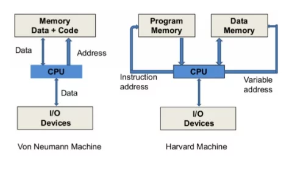
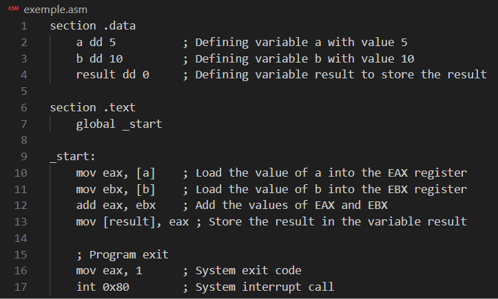
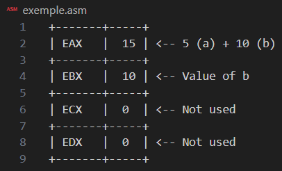
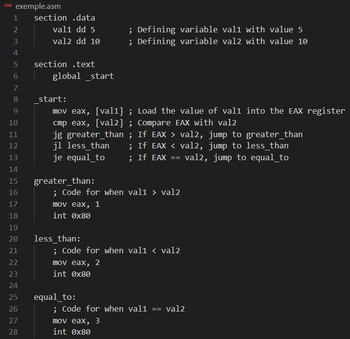
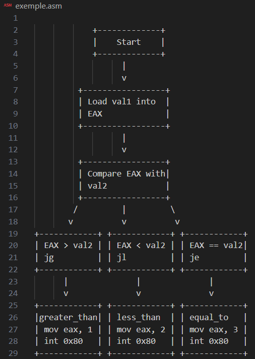
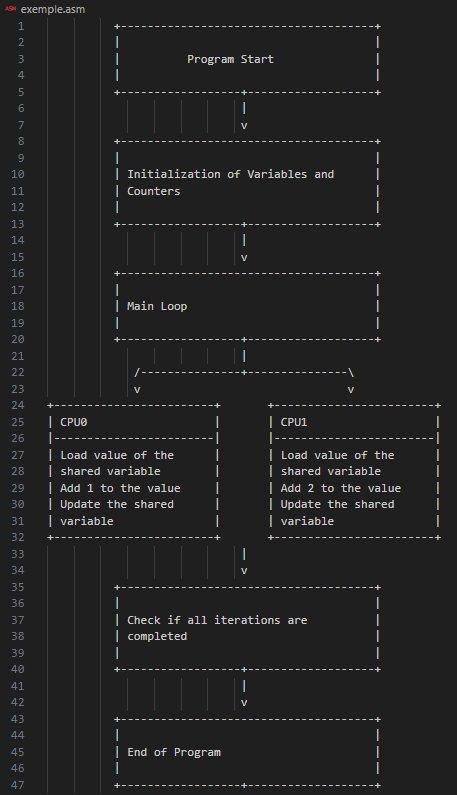

Introduction
In this post, we'll explore the CPU architecture and how it performs basic operations using Assembly language. We'll cover concepts like registers, data manipulation, and control flow instructions, with Assembly language examples and explanatory diagrams.
About CPU
The CPU is the brain of the computer, performing logical and arithmetic operations on data. It has units such as the Control Unit and the Arithmetic Logic Unit, and uses internal registers to temporarily store data and instructions. The speed of the CPU, determined by its internal clock, directly affects its processing power. There are several CPU architectures, such as x86, ARM, and Power, each with their own characteristics. x86 CPUs, manufactured by companies such as Intel and AMD, are common in PCs and servers.
Computer Architecture

Von Neumann Architecture
In short: CPU and Shared Memory. The CPU uses the same memory to store data and instructions. There is a single bus for transferring data and instructions, which can lead to "Von Neumann bottleneck", limiting the speed of the CPU by the speed of the memory.
Harvard Architecture
In short: Separate Memory. The CPU has separate memories for data and instructions. There are separate buses for instructions and data, allowing simultaneous access, which potentially increases processing speed.
Registrars
Registers are small data stores within the CPU used for fast operations. They are crucial for efficient instruction execution. Here are some of the main registers in the x86 architecture:
ㅤEAX, EBX, ECX, EDX: General purpose registers. They are used for various operations, such as arithmetic, logic, and data manipulation.
ㅤESI, EDI: Index registers. They are often used for string and array processing operations.
ㅤEBP, ESP: Base pointer and stack pointer registers, respectively. EBP is used as a base pointer to the stack, while ESP is used to point to the top of the stack.
Register Manipulation Example
Let's start with a simple example of how to load values into registers and perform a sum.

Register Diagram

Flow Control Instructions
Flow control instructions allow altering the program execution based on specific conditions, such as branching to different parts of the code depending on the result of a comparison.
Flow Control Example
Here is an example that compares two values and branches to different routines based on the comparison result:

Flow Control Diagram

Clarifying a doubt
Let's consider two processors (CPU0) and (CPU1) and a shared resource (shared variable) that both processors can access and modify.

This code simulates two processors (CPU0) and (CPU1) competing for access and modification of a shared variable. CPU0 adds 1 to the shared variable, while CPU1 adds 2. The total number of iterations is defined by ebx. At the end of the iterations, the final value of the shared variable is printed.
Communication Flow and Load Distribution Diagram

Conclusion
This post covers fundamental concepts of CPU architecture using Assembly, with code examples and diagrams to facilitate understanding. From basic register manipulation to flow control and logical operations, these examples provide a comprehensive view of how CPUs execute instructions.